Code
library(here)
library(tidyverse)
library(sf)
library(tigris)
library(rnaturalearth)
library(ggthemes)
library(GGally)
sf_use_s2(FALSE)These are some figures for the livability paper
library(here)
library(tidyverse)
library(sf)
library(tigris)
library(rnaturalearth)
library(ggthemes)
library(GGally)
sf_use_s2(FALSE)City-level data assembled in data-assembly.
city_data <- here("final_fig_data.geojson") |>
st_read() |>
mutate(migr_pct_trunc = ifelse(migration_pct < -0.05, -0.05, migration_pct)) |>
mutate(migr_pct_trunc = ifelse(migr_pct_trunc > 0.05, 0.05, migr_pct_trunc))Create a basic basemap.
states_map <- states() |>
filter(STUSPS %in% c("RI",
"NJ",
"CT",
"IL",
"IN",
"MA",
"ME",
"MN",
"MI",
"ND",
"NH",
"NY",
"OH",
"PA",
"VT",
"WI"))
great_lakes <- ne_download(type = "lakes", category = "physical", scale = 50) |>
st_transform(crs = st_crs(states_map)) |>
st_filter(states_map)
cape_cod <- area_water(state = "MA", county = c("Barnstable",
"Plymouth",
"Suffolk",
"Nantucket",
"Dukes"))
long_island <- area_water(state = "NY", county = c("Suffolk",
"Nassau",
"Queens",
"Kings",
"New York"))
nj_water <- area_water(state = "NJ", county = c("Bergen",
"Hudson",
"Union",
"Middlesex",
"Monmouth"))
crs_frostbelt = "+proj=lcc +lat_0=39 +lon_0=-89 +lat_1=37 +lat_2=47 +x_0=0 +y_0=0 +datum=NAD83 +units=m +no_defs +type=crs"
base_map <- ggplot(states_map) +
geom_sf(fill = "gray90",
color = "white") +
geom_sf(data = great_lakes,
color = NA,
fill = "white") +
geom_sf(data = cape_cod, fill = "white", color = NA) +
geom_sf(data = long_island, fill = "white", color = NA) +
geom_sf(data = nj_water, fill = "white", color = NA) +
theme_map()Here is a map showing spatial variation in housing affordability.
base_map +
geom_sf(data = city_data,
color = NA,
aes(fill = housing_trunc)) +
scale_fill_viridis_c(name = "Median housing\ncosts as a share\nof median income",
breaks = seq(0.25, 0.5, by=0.05),
labels = c(paste0(seq(25, 45, by=5),"%"), "50% or more")) +
coord_sf(crs = crs_frostbelt)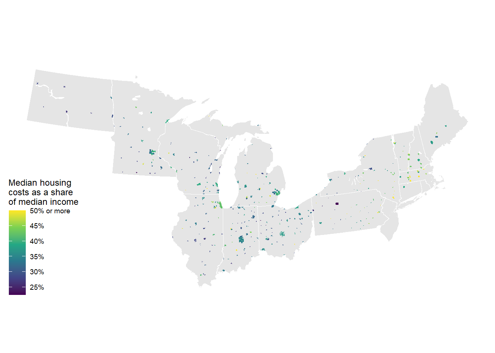
And unemployment.
base_map +
geom_sf(data = city_data,
color = NA,
aes(fill = unemp_trunc)) +
scale_fill_viridis_c(name = "Unemployment\nrate",
breaks = seq(0, 0.1, by = 0.02),
labels = c(paste0(seq(0, 8, by=2), "%"), "10% or more")) +
coord_sf(crs = crs_frostbelt)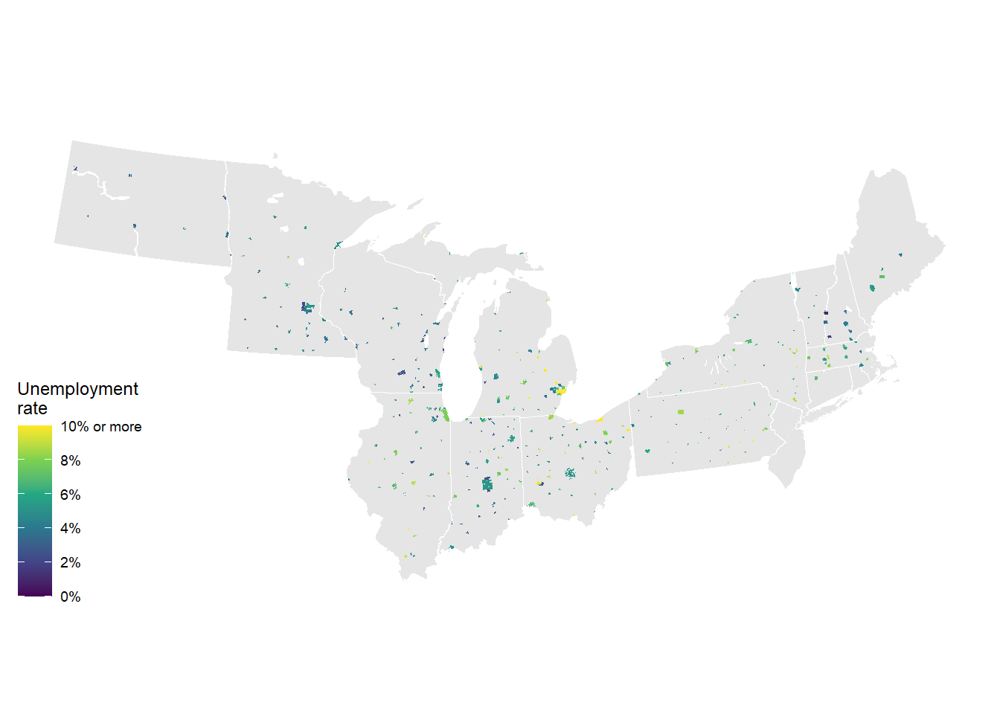
And transportation access.
base_map +
geom_sf(data = city_data,
color = NA,
aes(fill = access_trunc)) +
scale_fill_viridis_c(name = "Car-free\naccessibility\n(relative to\naccess by car",
breaks = seq(0.05, 0.35, by = 0.05),
labels = c("5% or less",
paste0(seq(10, 35, by=5), "%")),
direction = -1) +
coord_sf(crs = crs_frostbelt)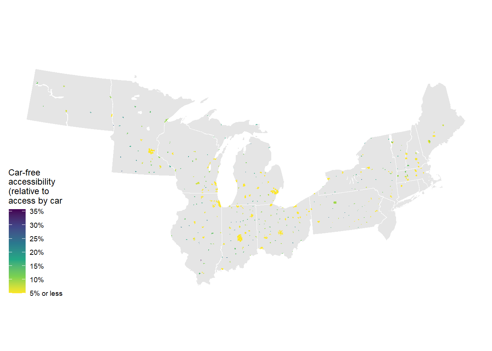
And net in-migration from to its county from counties outside the frost-belt
base_map +
geom_sf(data = city_data,
color = NA,
aes(fill = migr_pct_trunc)) +
scale_fill_gradient2(name = "Net in-migration from\noutside of frostbelt\nrelative to current population",
breaks = c(-0.05, -0.025, 0.025, 0.05),
labels = c("Lost more than 5 percent",
"Lost 2.5 percent",
"Gained 2.5 percent",
"Gained more than 5 percent")) +
coord_sf(crs = crs_frostbelt)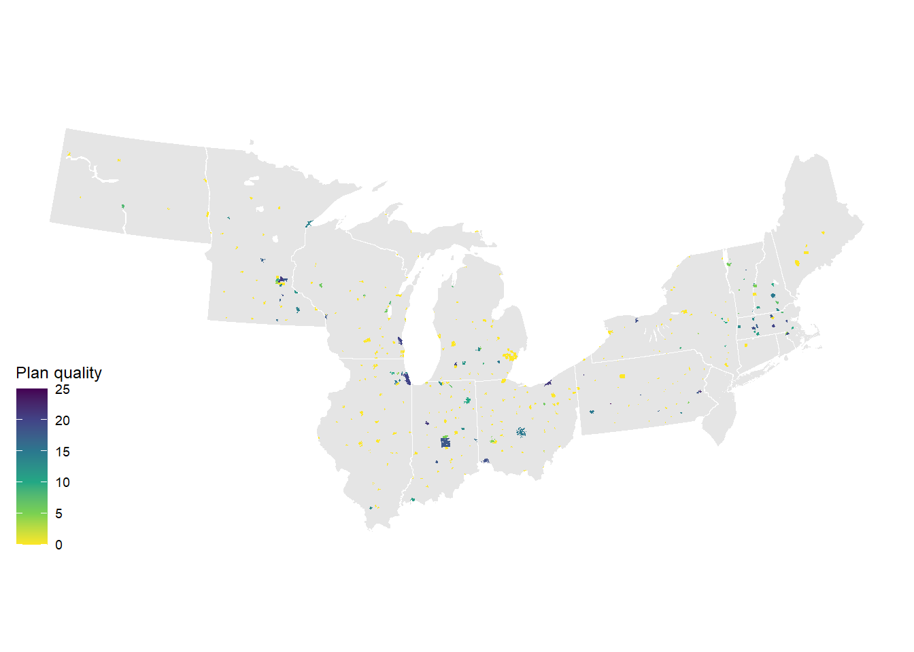
And finally, adaptation plan (or hazard mitigation plan) quality
base_map +
geom_sf(data = city_data,
color = NA,
aes(fill = plan_pts)) +
scale_fill_viridis_c(name = "Plan quality",
breaks = seq(0, 25, by = 5),
direction = -1) +
coord_sf(crs = crs_frostbelt)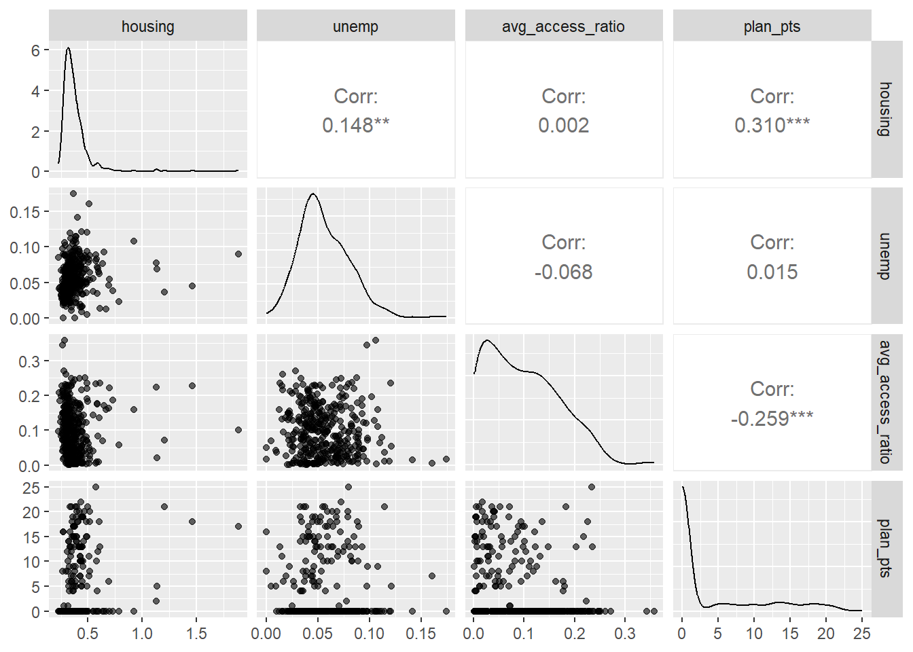
We used k-means clustering to identify five types of frostbelt city. Here’s how the clusters map onto plan scores.
ggplot(city_data) +
geom_violin(aes(x = cluster, y = plan_pts,
fill = cluster),
alpha = 0.2) +
geom_jitter(aes(x = cluster, y = plan_pts,
color = cluster),
alpha = 0.2) +
scale_fill_brewer(type = "qual", palette = 2) +
scale_color_brewer(type = "qual", palette = 2) +
scale_y_continuous(name = "Plan quality score") +
theme_minimal()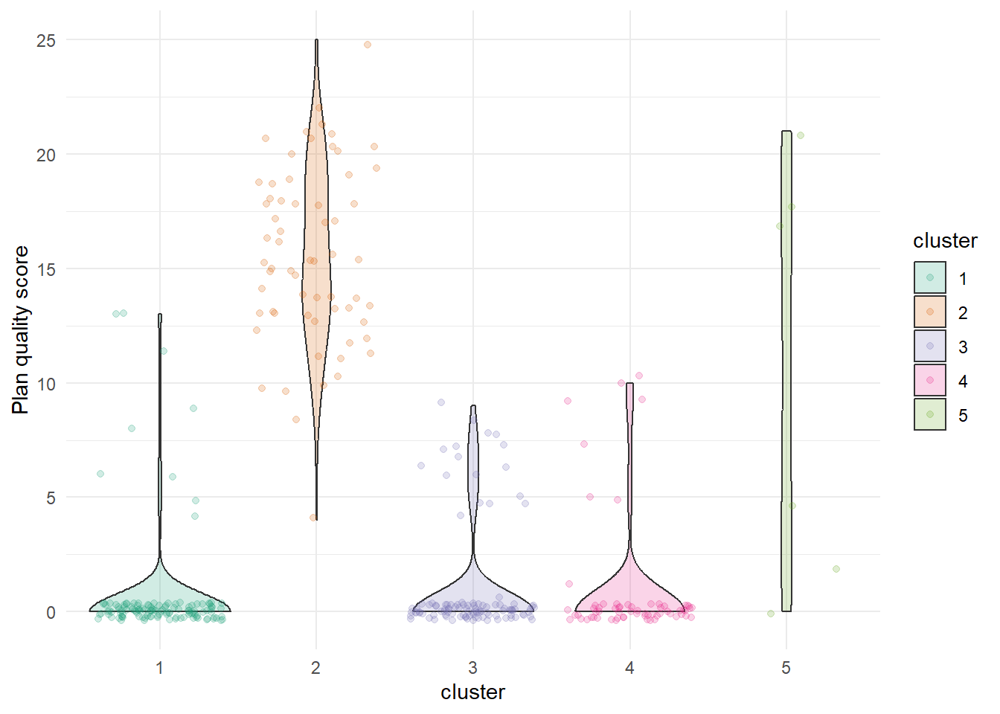
Here’s how the clusters map onto population.
ggplot(city_data) +
geom_violin(aes(x = cluster, y = populationE,
fill = cluster),
alpha = 0.2) +
geom_jitter(aes(x = cluster, y = populationE,
color = cluster),
alpha = 0.2) +
scale_fill_brewer(type = "qual", palette = 2) +
scale_color_brewer(type = "qual", palette = 2) +
scale_y_continuous(name = "Population",
transform = "log",
breaks = breaks <- 10^seq(2, 9, by=1),
labels = formatC(breaks, format = "d", big.mark = ",")) +
theme_minimal()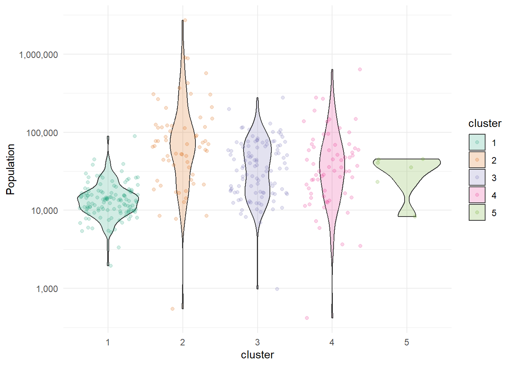
And for unemployment.
ggplot(city_data) +
geom_violin(aes(x = cluster, y = unemp,
fill = cluster),
alpha = 0.2) +
geom_jitter(aes(x = cluster, y = unemp,
color = cluster),
alpha = 0.2) +
scale_fill_brewer(type = "qual", palette = 2) +
scale_color_brewer(type = "qual", palette = 2) +
scale_y_continuous(name = "Umemployment rate") +
theme_minimal()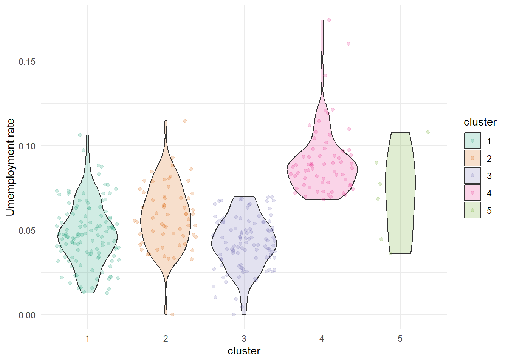
And housing affordability.
ggplot(city_data) +
geom_violin(aes(x = cluster, y = housing,
fill = cluster),
alpha = 0.2) +
geom_jitter(aes(x = cluster, y = housing,
color = cluster),
alpha = 0.2) +
scale_fill_brewer(type = "qual", palette = 2) +
scale_color_brewer(type = "qual", palette = 2) +
scale_y_continuous(name = "Housing cost as share of income") +
theme_minimal()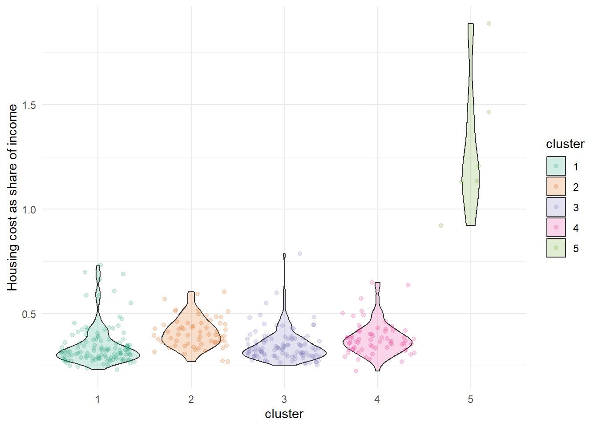
And transportation access.
ggplot(city_data) +
geom_violin(aes(x = cluster, y = avg_access_ratio,
fill = cluster),
alpha = 0.2) +
geom_jitter(aes(x = cluster, y = avg_access_ratio,
color = cluster),
alpha = 0.2) +
scale_fill_brewer(type = "qual", palette = 2) +
scale_color_brewer(type = "qual", palette = 2) +
scale_y_continuous(name = "Share of car-accessible places that are\naccessible without a car") +
theme_minimal()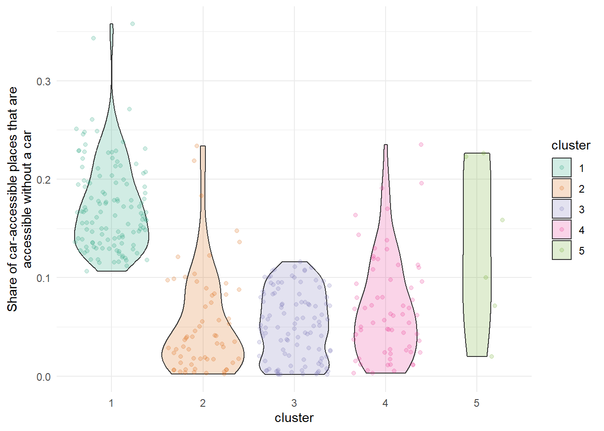
And for net in-migration from beyond the frostbelt.
ggplot(city_data) +
geom_violin(aes(x = cluster, y = migration_pct,
fill = cluster),
alpha = 0.2) +
geom_jitter(aes(x = cluster, y = migration_pct,
color = cluster),
alpha = 0.2) +
scale_fill_brewer(type = "qual", palette = 2) +
scale_color_brewer(type = "qual", palette = 2) +
scale_y_continuous(name = "Net In-migration\nas a share of current population") +
theme_minimal()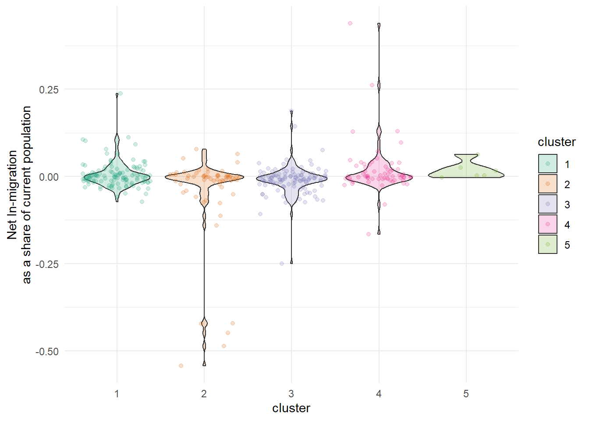
Here’s how the clusters map spatially.
base_map +
geom_sf(data = city_data,
color = NA,
aes(fill = cluster)) +
scale_fill_brewer(type = "qual", palette = 2) +
coord_sf(crs = crs_frostbelt)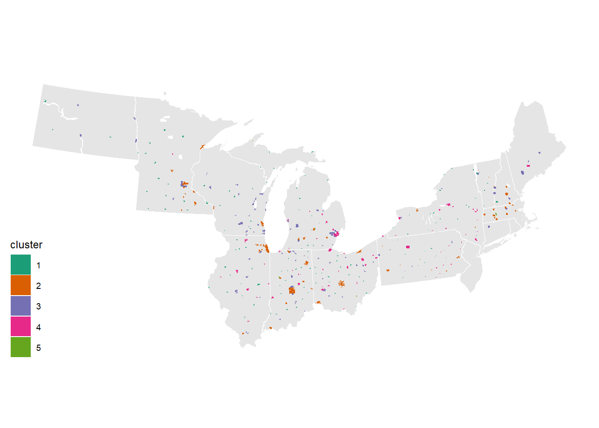
Comparing plan quality with transportation
ggplot(city_data) +
geom_point(aes(x = plan_pts,
y = avg_access_ratio,
size = populationE,
color = cluster),
alpha = 0.4) +
scale_x_continuous(name = "Plan quality score") +
scale_y_continuous(
name = "Ratio of car-free accessibilty\nto accessibilty by car") +
scale_size(name = "Population",
breaks = breaks <- c(2*10^seq(2:7)),
labels = formatC(breaks, format = "d", big.mark = ",")) +
scale_color_brewer(type = "qual", palette = 2) +
theme_minimal()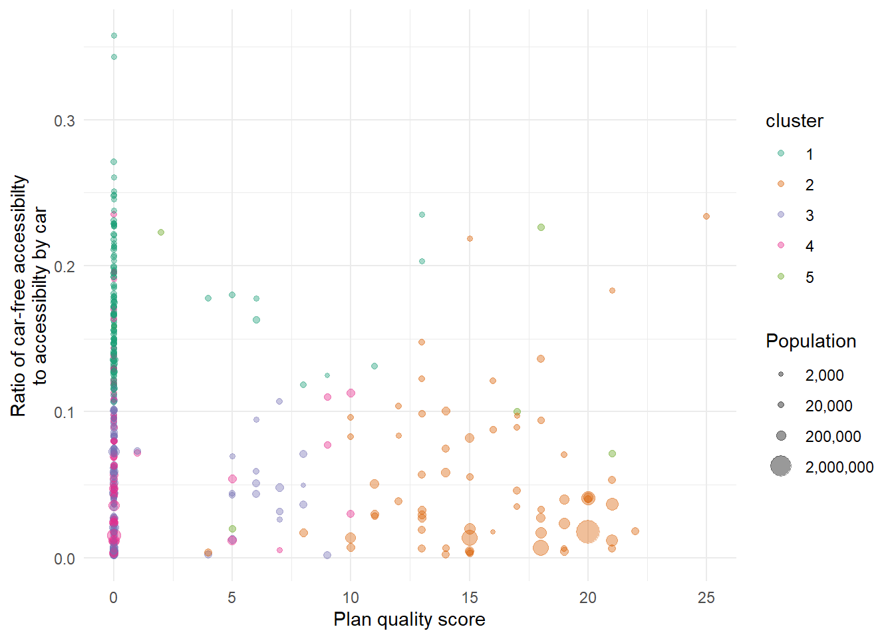
ggplot(city_data) +
geom_point(aes(x = plan_pts,
y = housing_trunc,
size = populationE,
color = cluster),
alpha = 0.4) +
scale_x_continuous(name = "Plan quality score") +
scale_y_reverse(
name = "Ratio of median housing costs\nto median income",
breaks = seq(0.1, 0.5, by = 0.05),
labels = c(seq(0.1, 0.45, by= 0.05), "0.5 or more")) +
scale_size(name = "Population",
breaks = breaks <- c(2*10^seq(2:7)),
labels = formatC(breaks, format = "d", big.mark = ",")) +
scale_color_brewer(type = "qual", palette = 2) +
theme_minimal()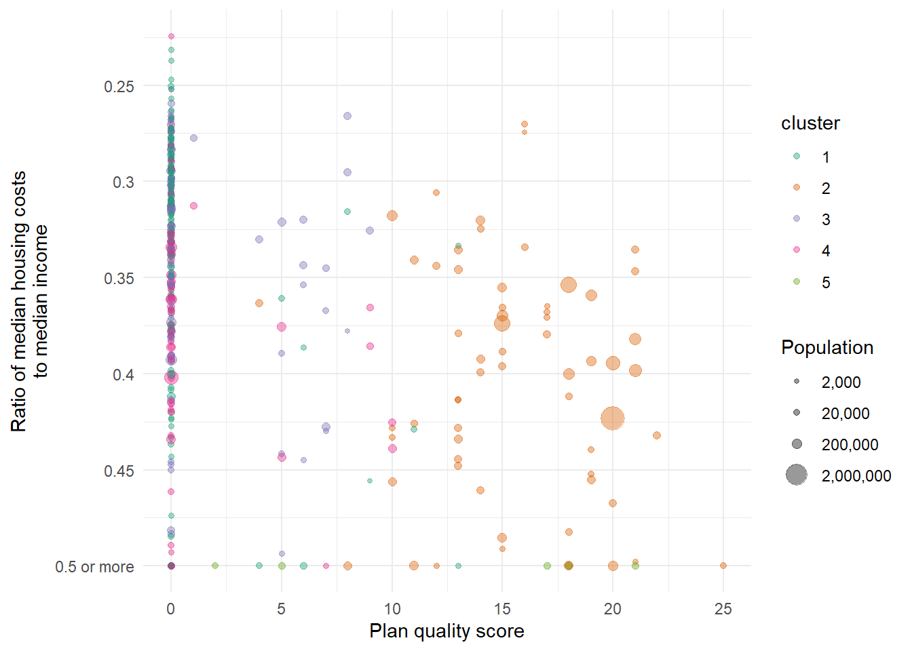
ggplot(city_data) +
geom_point(aes(x = plan_pts,
y = unemp_trunc,
size = populationE,
color = cluster),
alpha = 0.4) +
scale_x_continuous(name = "Plan quality score") +
scale_y_reverse(
name = "Unemployment rate",
breaks = seq(0, 0.1, by = 0.02),
labels = c(paste0(seq(0, 8, by= 2), "%"), "10% or more")) +
scale_size(name = "Population",
breaks = breaks <- c(2*10^seq(2:7)),
labels = formatC(breaks, format = "d", big.mark = ",")) +
scale_color_brewer(type = "qual", palette = 2) +
theme_minimal()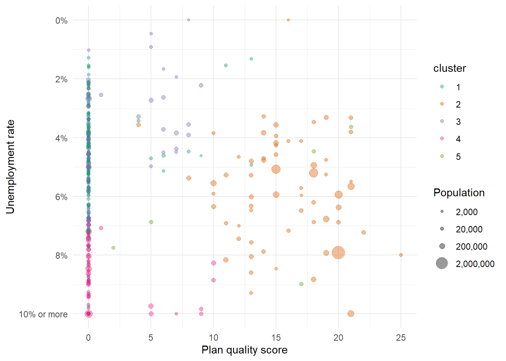
ggplot(city_data) +
geom_point(aes(x = plan_pts,
y = migration_pct,
size = populationE,
color = cluster),
alpha = 0.4) +
scale_x_continuous(name = "Plan quality score") +
# scale_y_reverse(
# name = "Unemployment rate",
# breaks = seq(0, 0.1, by = 0.02),
# labels = c(paste0(seq(0, 8, by= 2), "%"), "10% or more")) +
scale_size(name = "Population",
breaks = breaks <- c(2*10^seq(2:7)),
labels = formatC(breaks, format = "d", big.mark = ",")) +
scale_color_brewer(type = "qual", palette = 2) +
theme_minimal()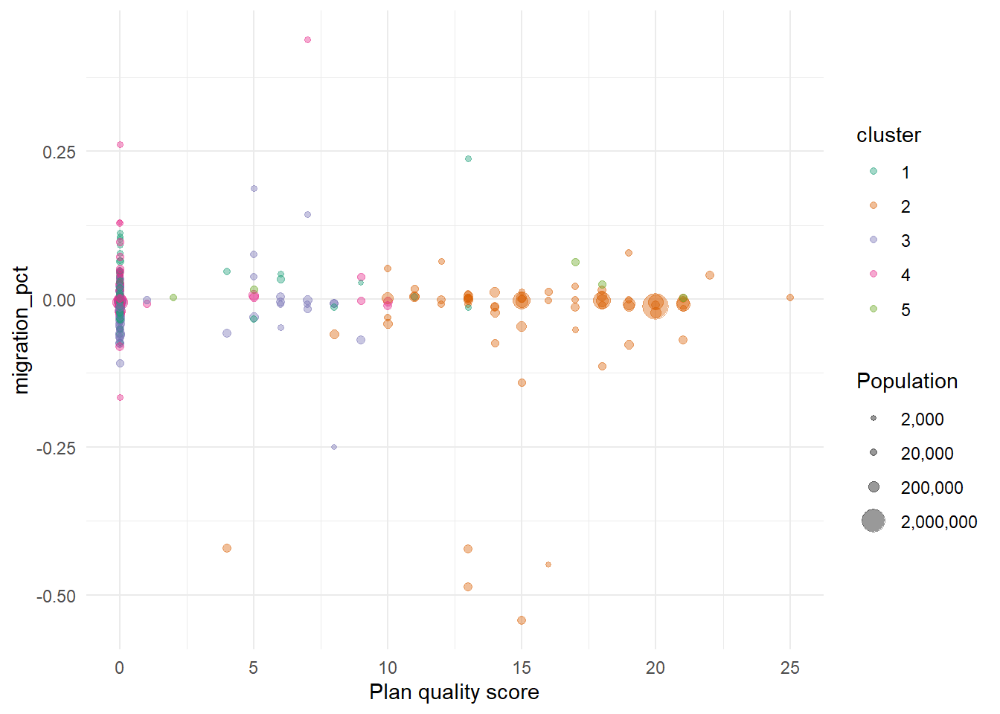